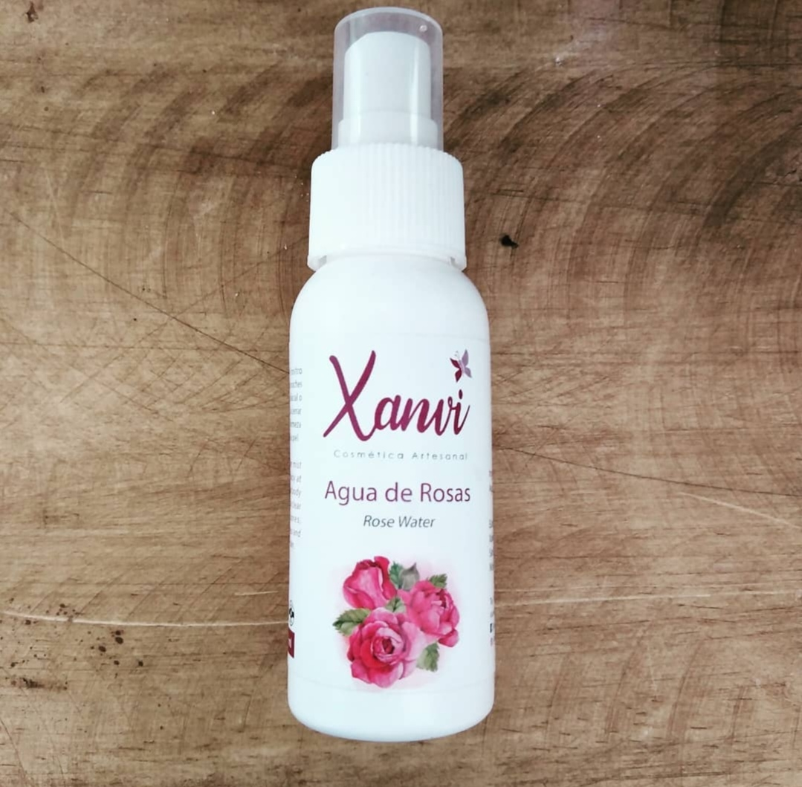
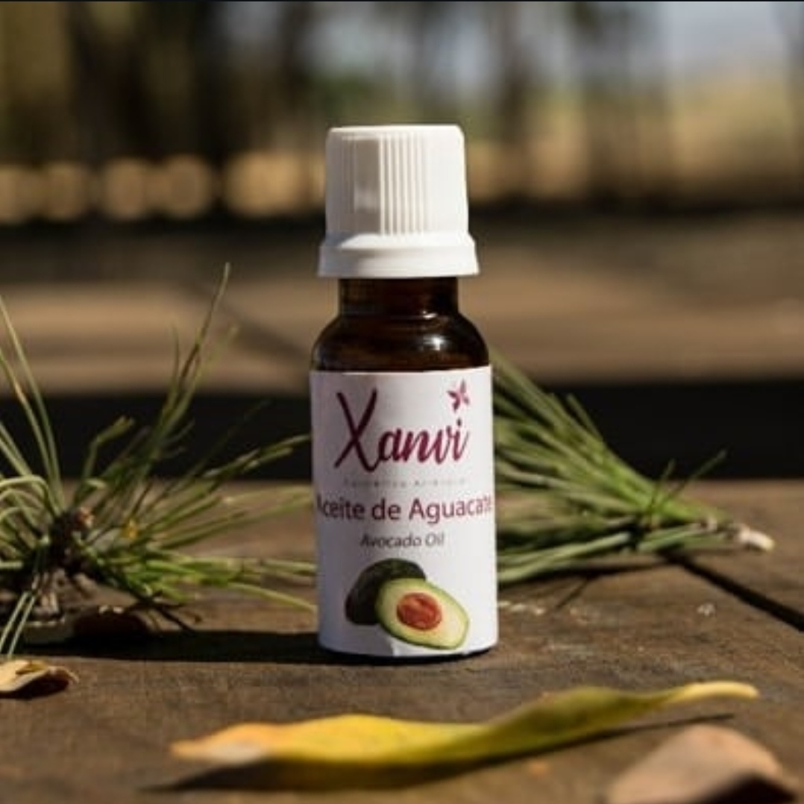
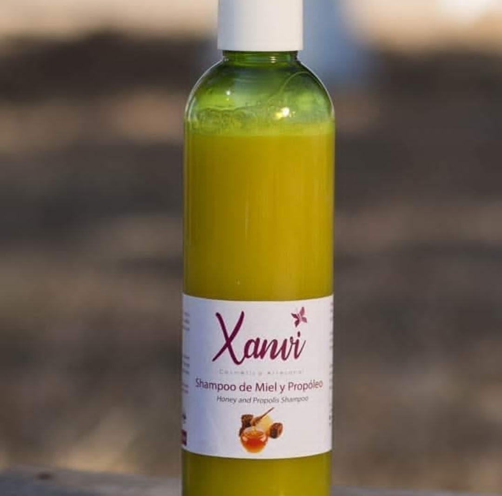

Productos Naturales
Cada uno de nuestros productos ha sido formulado con ingredientes naturales de la más alta calidad, pensados para nutrir, proteger y rejuvenecer tu piel y cabello.

Agua de Rosas
El agua de rosas es mucho más que un aroma agradable; es un básico de la cosmética natural y la salud que se ha usado por siglos. Se obtiene mediante la destilación de pétalos de rosa (generalmente Rosa damascena) y destaca por su versatilidad.
Hidratante y Rejuvenecedora: Ayuda a retener el agua en la epidermis, suavizando las líneas de expresión.
Antiinflamatoria y Calmante: Ideal para pieles con rosácea, acné o irritación tras el afeitado/depilación. Reduce el enrojecimiento casi al instante.
Antioxidante: Gracias a su alto contenido en vitamina C y E, protege las células contra los radicales libres, retrasando el envejecimiento prematuro.
Astringente Suave: Limpia los poros y elimina el exceso de grasa sin resecar, lo que la hace perfecta para pieles mixtas.
Cicatrizante: Estimula la regeneración de los tejidos, ayudando a que las marcas de acné o pequeñas heridas sanen más rápido.
Consultar →
Extracto de Aguacate
El extracto de aguacate es básicamente un "superalimento" concentrado, no solo para la dieta, sino especialmente para la cosmética y la salud preventiva. Se obtiene principalmente de la pulpa, aunque también se extraen compuestos valiosos de la semilla y la piel.
Ácidos grasos monoinsaturados: Principalmente ácido oleico (el mismo del aceite de oliva), que nutre profundamente la piel y el cabello.
Vitaminas: A, C, E, K y complejo B (especialmente ácido fólico), esenciales para la regeneración celular y la protección cutánea.
Minerales: Potasio (más que un plátano) y magnesio, que fortalecen la barrera natural de la piel.
Fitoesteroles: Compuestos que ayudan a bloquear la absorción del colesterol y promueven la salud de la piel desde el interior.
Consultar →
Champú de Miel y Propóleo
El champú de miel y propóleo es una de las combinaciones más potentes y queridas en la cosmética natural. Básicamente, es como darle un "shot" de vitaminas y desinfectante a tu cuero cabelludo.
Control de la Caspa: Gracias al propóleo, ayuda a combatir el hongo que causa la caspa y regula la descamación.
Fortalecimiento: Nutre el folículo piloso, lo que puede ayudar a reducir la caída por quiebre.
Alivio del Picor: Si tienes el cuero cabelludo sensible o irritado, esta mezcla es sumamente calmante.
Limpieza Profunda sin Resecar: A diferencia de los champús comerciales cargados de sulfatos, la miel asegura que el pelo no quede "tieso" después del lavado.
Consultar →